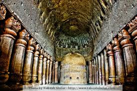
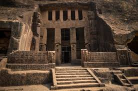
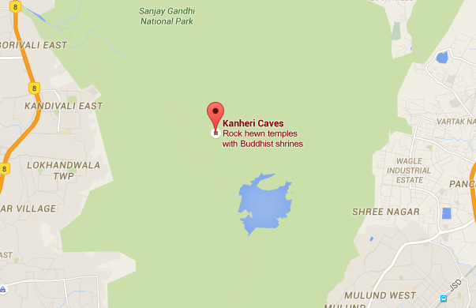

kanheri caves
k A N H E R I C A V E S
The caves have chaityagrihas with rock-cut stupas where Buddhists worshipped. There are single and multiple celled viharas or monasteries that were abode to Buddhist monks. The caves also had podhis or water cisterns which were dug skilfully to trap rainwater for use during summers. The initial caves are small and unadorned, consisting of a single cell with front-pillared verandahs.
The most distinguished of these caves is Cave number 3, which is India's second largest chaityagriha, after Karle in Pune. The unparalleled feature of these caves is that each one has a stone podium or rock bed, unlike other caves in the country. The most impressive attractions of these caves are exquisite paintings of Gautam Buddha and a large Buddhist image known as Dagoba.



LOCATION:
Mumbai, Maharashtra 400101
HOTELS:

hotel Vinyasa
Address:opp R.J Thakur college,Veersavarkar Nagar,Thane.
Treebo Archana Resedency
Address: Thane.
Treebo Blossoms
Address: Thane.
HOSPITALS:

Asha Hospital
Address:1st Floor, Gatral Arcade, Akruli Road No.1, Mangalam Dairy Lane, Opposite Saibaba Mandir, Kandivali East, Mumbai, Maharashtra 400101
Phone:022 2887 7393
Financial Hospital
Address:Shop no. 03, Ground floor, EMP-48, Building No. 06, D-Wing, Halley Tower, Near Thakur Cinema,, Gokul Towers Rd, Evershine Millennium Paradise, Thakur Village, Kandivali East, Mumbai, Maharashtra 400101
Phone:
022 6608 6900